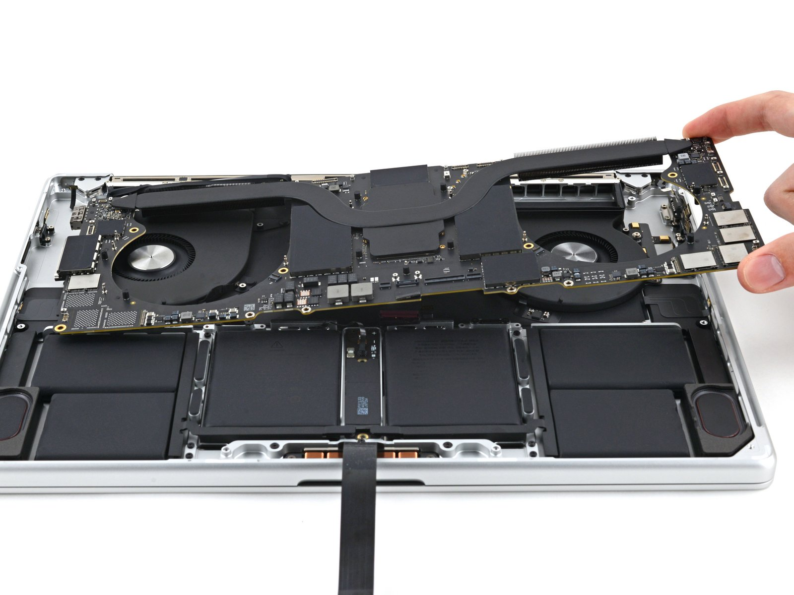
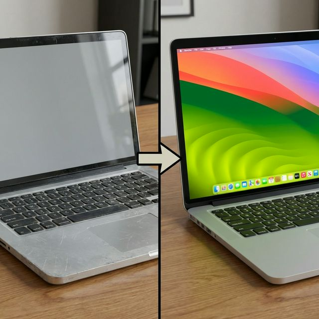

Reparación Especializada de MacBook y Tarjeta Lógica en CDMX
¿Tu MacBook Pro no enciende? ¿Tu MacBook Air sufrió daño por líquidos? Somos expertos en micro-soldadura a nivel componente en Polanco, Santa Fe, Interlomas y Bosques. Rescatamos equipos que otros dan por muertos.
Salvamos tu Equipo cuando otros dicen "No tiene arreglo"

Reparación de Tarjeta Lógica (Micro-soldadura)
MacBook Pro, Air e iMac
¿Te dijeron que "cambies la placa base" a un costo excesivo? En Mac Wave reparamos a nivel componente.
Ver detalles técnicos de Reparación Lógica
Identificamos cortocircuitos, resistencias quemadas o chips de control de energía dañados (SMC, CD3215, T2 Shield). Reemplazamos únicamente el microcomponente fallido, lo cual reduce el costo hasta en un 70% comparado con el cambio de la tarjeta completa en tiendas oficiales.
- Diagnóstico con cámara térmica y diagramas esquemáticos.
- Reparación de daño severo por líquidos (café, agua, etc).
- Solución a problemas de retroiluminación (pantalla oscura).

Rescate de Equipos Declarados "Irreparables"
Años de experiencia devolviendo la vida a equipos Apple
¿En la tienda oficial te dijeron que tu equipo ya no tiene arreglo o es obsoleto? Nosotros combinamos ingeniería inversa en hardware y reballing de chips para que sigan funcionando sin problemas.
¿Qué significa reparar a nivel componente?
Significa que no somos cambia-piezas. Si en la tienda oficial un componente de la placa base falla, te venden toda la placa por miles de pesos. Nosotros localizamos, desoldamos y reemplazamos únicamente el chip milimétrico dañado (condensadores, Mosfets, FPC).
Aplicamos esto a problemas graves de gestión de energía, pantallas oscuras por daño en backlight y más.
Maximiza el Rendimiento de tu Mac
¿Tu Mac de 2012–2017 ya no corre los bancos, Chrome marca error o va lentísima? No necesitas comprar una nueva. Con los componentes y el software correctos, tu equipo quedará rápido y funcional.
Instalación de macOS Sonoma y Sequoia en Macs Antiguas
Optimización avanzada con OpenCore Legacy Patcher
Las Mac están construidas para durar muchos años, el problema es que Apple deja de darles soporte. Aplicamos una técnica certificada que fuerza al equipo a correr sistemas operativos modernos de forma fluida.
- ✅ Las apps de bancos vuelven a funcionar al tener seguridad moderna.
- ✅ Instala Netflix, Office 365, Adobe y todo lo actual.
- ✅ Obtén Modo Oscuro, Siri y funciones modernas.
- ✅ Ahorra decenas de miles de pesos sin comprar otro equipo.
Ampliación de Disco Sólido (SSD) y Memoria RAM
Componentes de alto rendimiento para tu Mac
Sustituimos el antiguo disco mecánico por memoria Flash NVMe ultrarrápida y ampliamos la RAM para que puedas trabajar con múltiples aplicaciones sin caídas de rendimiento.
¿Se pueden instalar en cualquier Mac?
La mayoría de MacBook Pro, Air e iMac hasta 2017 permiten cambios de SSD ultrarrápido (NVMe), y las Pro e iMac antiguas permiten crecimiento masivo de RAM. ¡Cotiza con tu número de serie!